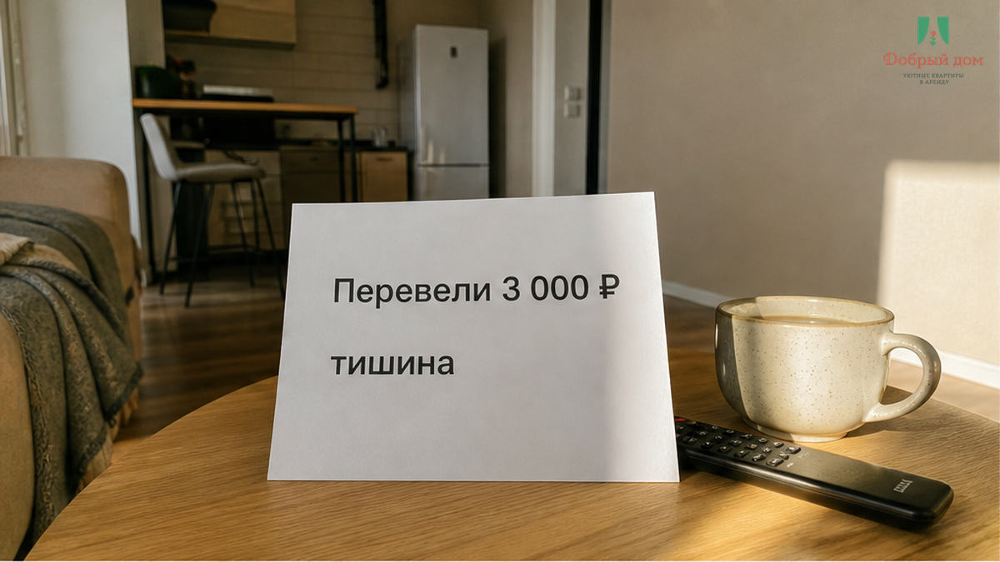
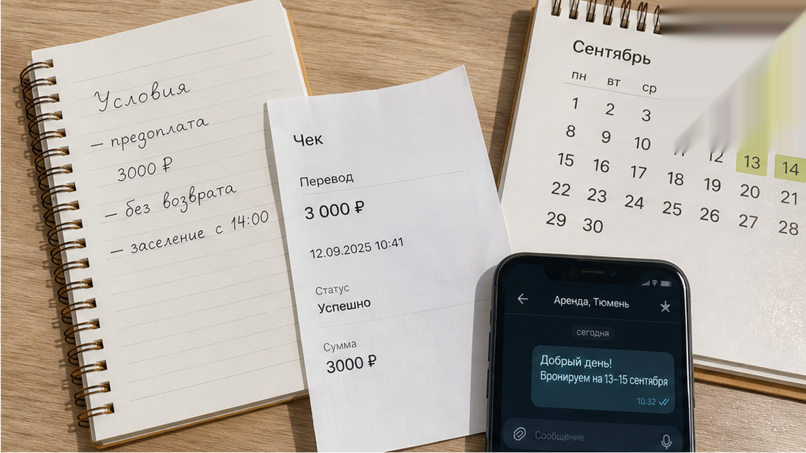
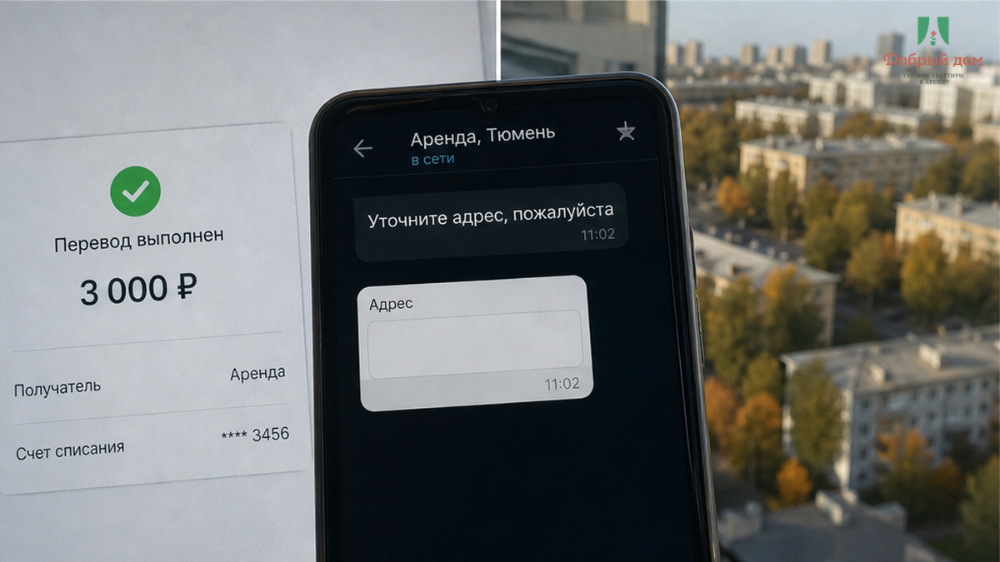
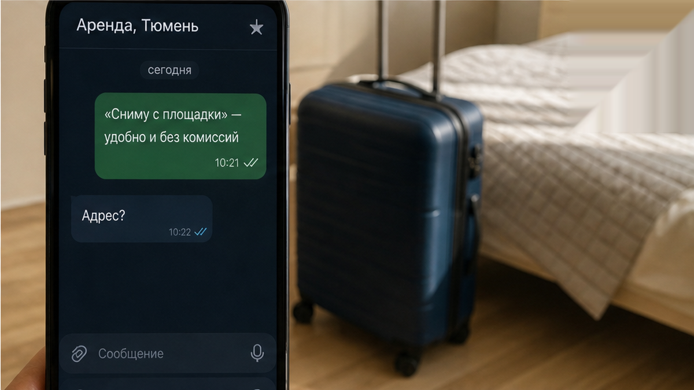
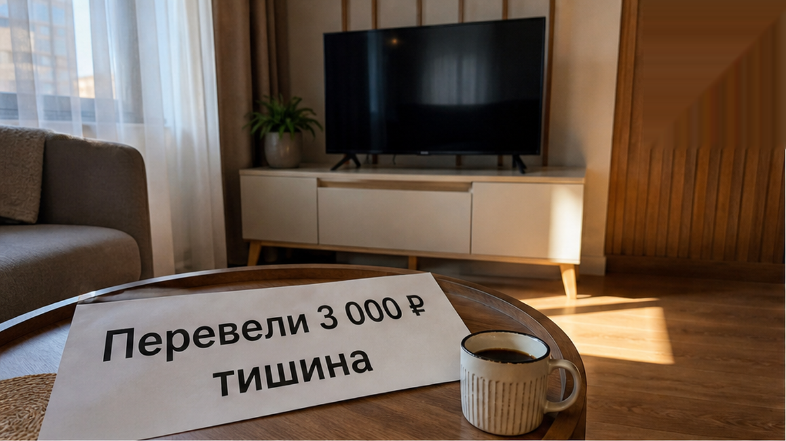
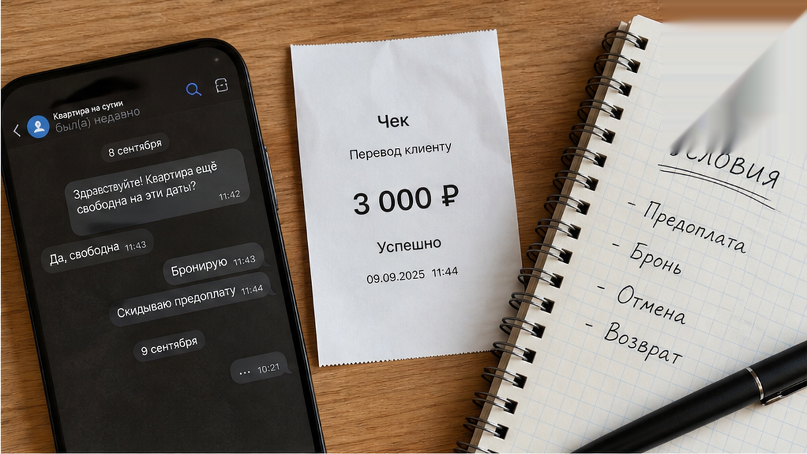
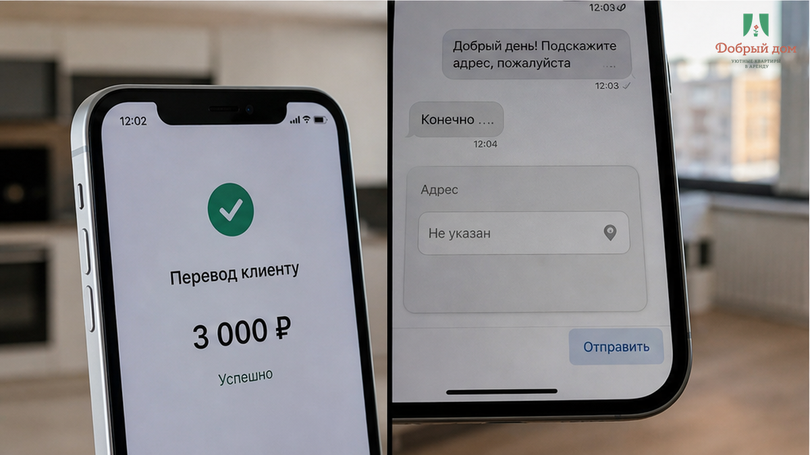

«Скиньте 3 000 — сниму объявление с площадки, даты будут ваши». Пара ехала в Тюмень поездом, две ночи были нужны уже вечером. В объявлении всё выглядело привычно: квартира посуточно, от хозяев, без посредников, цена на 400 ₽ ниже соседних. Попросили перевести по номеру телефона на личную карту. Пообещали: поступят деньги — через десять минут придёт код от замка.
Деньги поступили. Кода не было ни через десять минут, ни через час. К вечеру гости сидели с двумя сумками в поезде, смотрели на свои сообщения с двумя галочками и не понимали, куда ехать: адреса им так и не дали. Ночью пришёл ответ: «Ключ в другом кейсе, нужно ещё 2 000, потом скину адрес». Они не отправили вторую сумму. Вызвали такси за 450 ₽, уехали в другой район и сняли на ночь то, что осталось: дороже, хуже, после дороги. Первые 3 000 ₽ остались на чужой карте.
Я хост посуточной в Тюмени. Это «Добрый дом». Пишем в Telegram · MAX.

Переписка заняла минут пять. «Здравствуйте, нужны две ночи, приезжаем поездом вечером». В ответ: «Свободно. Скиньте 3 000 предоплатой, сниму с площадки, чтобы никто не занял». На вопрос про код — «через десять минут после оплаты».
После перевода началось знакомое: «я в дороге», «сейчас уточню у напарника», «кейс на подъезде поменяли». Потом — «нужно ещё 2 000, там другой замок». В этих словах легко потеряться, потому что они звучат как обычная накладка. Но к этому моменту у гостей не было главного: адреса, номера квартиры, понятного времени заселения, условий возврата. Они знали о жилье почти всё из объявления — кроме того, существует ли оно для них вообще.
Это была не бронь и не удержание дат. Это был перевод на карту без условий. А когда деньги уже ушли, человек с другой стороны может менять разговор как хочет: обещать код позже, переносить адрес, просить доплату. Про такие сюрпризы у двери, когда деньги уже отданы, мы разбирали отдельно: оплатил за двоих — у двери попросили доплату за третьего.

Не на просьбе «докиньте ещё 2 000». Она была уже следствием. Всё сломалось раньше: 3 000 ₽ ушли туда, где не были названы ни адрес, ни срок, ни правила, ни то, что именно гость получает за эти деньги.
Пока деньги у гостя, разговор идёт на равных. Можно спросить, уточнить, отказаться, выбрать другое место. Когда деньги на чужой карте, гость превращается в человека, который ждёт. А ожидание ничего не стоит тому, кто держит перевод. Отсюда и фраза про второй кейс, другой замок, напарника, ещё одну сумму. Доплата до ключа не приближает ключ. Она проверяет, получится ли взять ещё.
Перевод по СБП сам по себе не проблема. Предоплата в посуточной аренде — тоже не проблема. Проблема — перевод без предмета. Если вам говорят «оплатите, потом всё пришлю», вы платите не за квартиру. Вы платите за обещание. А обещание нельзя открыть ключом и нельзя предъявить вечером у подъезда.
Вам тоже предлагают сначала перевести деньги, а детали обещают потом? Напишите в Telegram или MAX. Иногда одного спокойного вопроса хватает, чтобы переписка сразу стала понятнее.

Эта фраза цепляет потому, что гость уже сравнил цены. Где-то на 300–500 ₽ дешевле, хозяин отвечает быстро, даты горят, поезд уже куплен. «Давайте напрямую, сервис берёт процент» — звучит почти как забота о вашем кошельке.
Но в этой истории «дешевле» вышло иначе: минус 3 000 ₽, плюс 450 ₽ такси, плюс ночь в неудобной квартире. Площадка не делает человека честным автоматически, а личный перевод не делает его нечестным автоматически. Разница в другом: до перевода должны появиться понятные условия, которые не исчезают вместе с сообщениями.
Отдельно смотрите на отзывы. Высокая оценка без нормальных текстов и истории — не репутация, а витрина. Мы показывали, как выглядит ситуация с рейтингом 4,8 при двух отзывах «всё супер». Проверять это нужно до оплаты, не с чемоданом после поезда.

У нас порядок обратный. Сначала гость получает то, что можно проверить: адрес и номер квартиры, время заезда и выезда, полную сумму и её разбивку, что входит в цену, как работает замок, кто на связи, что будет при отмене. Потом обсуждаем оплату. Не из красивого принципа — просто иначе человек платит за воздух.
Бесконтактное заселение не означает «переведите, а адрес потом». Код и способ входа тоже должны быть частью понятной договорённости. Об этом подробнее есть в разборе бесконтактного заселения посуточно в Тюмени.
И не оставляйте на потом разговор о возврате денег. Особенно если есть залог или поезд может опоздать. Условия не должны появляться на выезде, когда гость уже стоит в коридоре. Такая история разобрана здесь: перевёл залог за посуточную — на выезде сказали «не вернём».

Спросите дословно: «Сколько и за что именно переводим до заселения?»
Честный ответ обычно скучный: «2 000 ₽ предоплата из 5 400 ₽ за две ночи, остаток при заселении; адрес такой-то, код пришлю за час до заезда; при отмене за сутки возвращаем полностью». В таком ответе есть цифры, время и смысл. Нечестный часто звучит красивее: «стандартная предоплата», «как у всех», «даты держим только по оплате». Но стандарта без конкретной суммы и условий не существует.
Если после вопроса вас торопят: «есть ещё желающие, решайте сейчас», — не путайте давление со спросом. При реальной броне человек спокойно объясняет, что вы оплачиваете. Когда объяснять нечего, вас стараются не оставить наедине с вопросами.


Сначала нужны конкретные условия, потом деньги и ключ. Не наоборот. За несколько лет заселений я не видел случая, где «плюс 2 000 до ключа» вдруг заканчивались ключом. Ключ, за который требуют доплатить после тишины, — уже крючок.
Если нужна квартира в Тюмени без этого квеста, напишите нам. Сначала присылаем адрес и условия, потом говорим про оплату.
Telegram: t.me/Dobriy_dom_72
MAX: max.ru/id660300569233_biz
Бронирование: добрыйдом-72.рф/booking
Сайт: добрыйдом-72.рф
Телефон: +7 993 574-83-22
Менеджер: t.me/Dobriy_dom_Tyumen